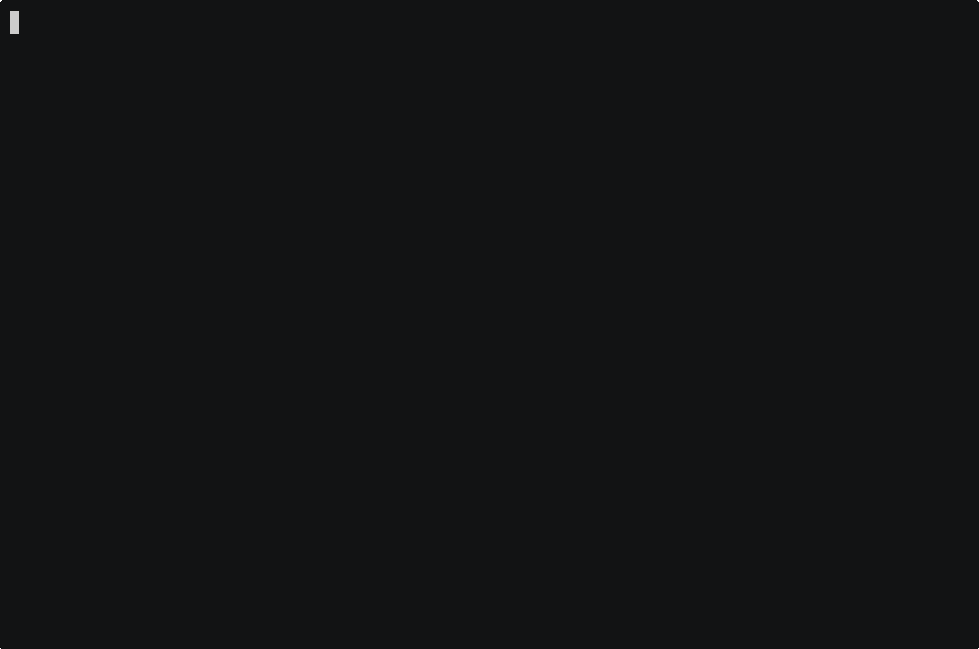
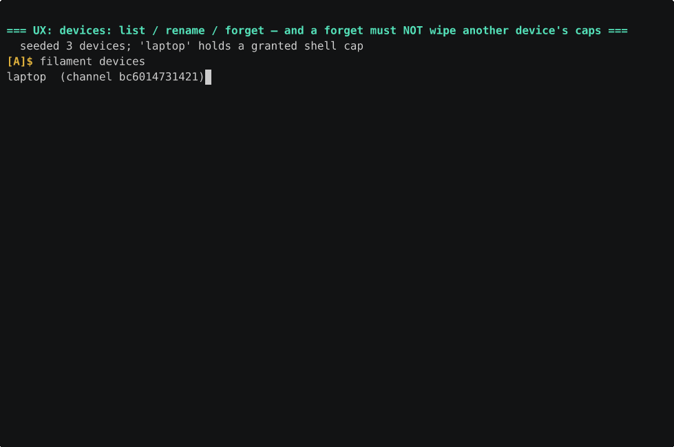
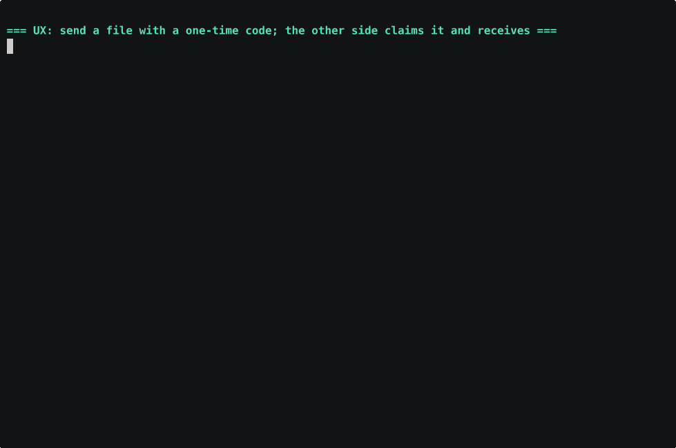
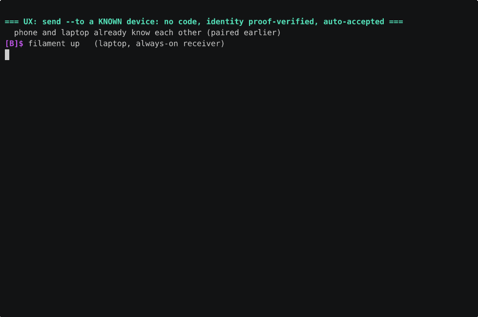
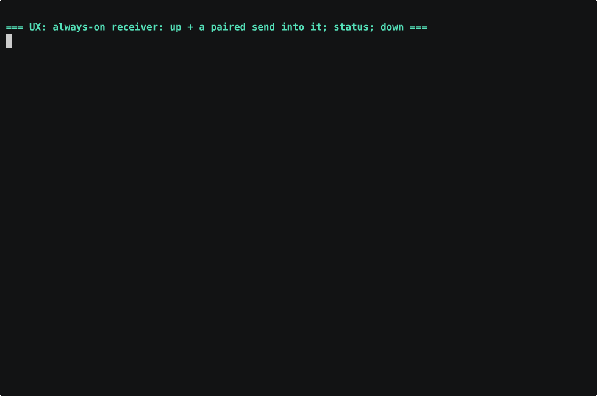
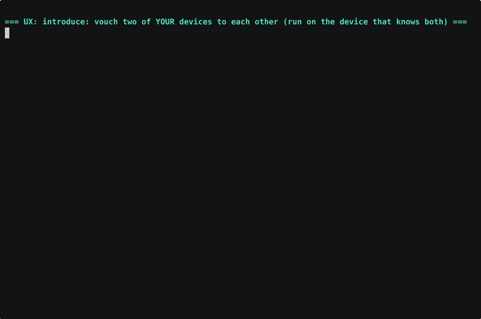
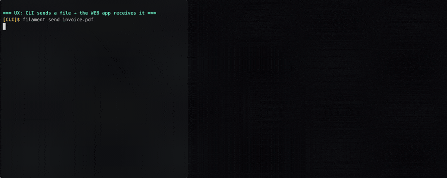
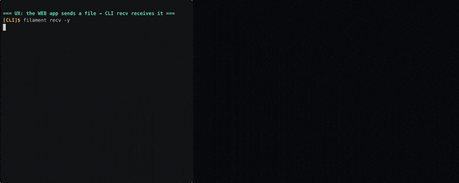
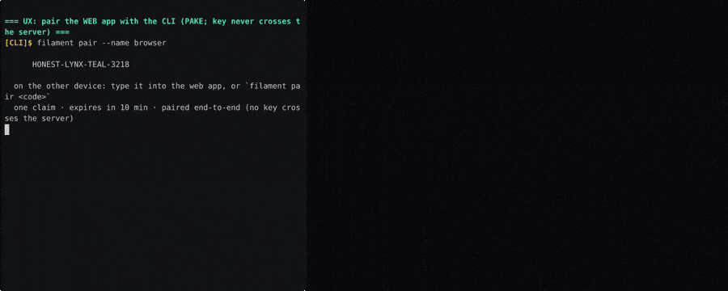

Human-watchable recordings of each CLI UX flow (cli↔cli and cli↔web), driven against a local backend.
10 PASS 0 FAIL 0 BLOCKED / 10 scenarios
A mints a PAKE code, B claims it; both derive the same channel — no key crosses the server.

paired; matching channel c7ae8902b30a
And the regression guard: forgetting one device must NOT wipe another device's granted shell cap.

rename+forget worked; laptop's shell cap SURVIVED the unrelated forget
Sender mints a speakable code; the receiver claims it and the bytes land, sha256-verified end-to-end.

received payload.bin; sha256 matches end-to-end
No code: a remembered device, identity proof-verified and auto-accepted; bytes sha256-verified.

no code; verified 'laptop'; delivered + hash match
Bring up a trusted-only drop target, send into it, check status, stop it; bytes sha256-verified.

up received; status reported; down stopped it
Deny-by-default consent; then `filament ssh peer -- echo OK` runs over the data channel.
shell granted; ssh ran a remote command over the tunnel
A hub that knows both vouches them to each other with a fresh mutual secret.

introduce delivered a fresh mutual secret; alice<->bob now know each other
The browser (local frontend) accepts the offered file and reaches the download affordance.

CLI offered invoice.pdf; browser accepted and reached the download (save) affordance
Browser picks a file and sends it; the CLI receiver writes it, sha256-verified (authoritative no-recorder verify pass). The GIF is a best-effort visual; single-host browser→CLI WebRTC can't complete while the webm recorder runs — see README.

VERIFY pass (no recorder): sha256 MATCHES. GIF is a best-effort visual; single-host browser→CLI WebRTC can't complete while the webm recorder runs (recording-contention, not a product break).
CLI mints a PAKE code; the browser claims it and stores the device (key never crosses the server).

browser claimed the CLI's PAKE code; both sides stored the mutual device